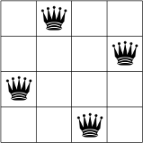
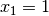
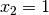
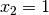
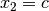
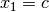
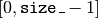

5.8. Breaking symmetries with SymmetryBreakers
Now that we have seen the Decision and DecisionVisitor classes in details and that we are trying to solve the n-queens problem, how could we resist to introduce SymmetryBreakers?
Breaking symmetries of a model or a problem is a very effective technique to reduce the size of the search tree and, most of the time, it also permits to reduce - sometimes spectacularly - the search time.
We have already seen this effectiveness when we introduced a constraint to avoid mirror Golomb rulers in section Breaking symmetries with constraints.
This time, we will use SymmetryBreakers. As their name implies, their role is to break symmetries. In contrast to explicitly adding symmetry breaking constraints in the model before the solving process, SymmetryBreakers add them automatically when required during the search, i.e. on the fly.
5.8.1. The basic idea
The basic idea is quite simple. Consider again the 4-queens problem. The following figures represent two symmetric solutions.

These two solutions are symmetric along a vertical axis dividing the square in two equal parts.
If we have  (or  ) during the search, we know that we don’t have to test a
solution with  (or
) during the search, we know that we don’t have to test a
solution with  (or  )
as every solution with () has an equivalent symmetric solution
with ().
)
as every solution with () has an equivalent symmetric solution
with ().
You can tell the CP solver not to visit the branch  if during the search we already have tried to set . To do this, we use a SymmetryManager and a SymmetryBreaker. The SymmetryManager collects SymmetryBreakers for a given problem. During the search, each Decision is visited by all the SymmetryBreakers. If there is a match between the Decision and a SymmetryBreaker, the SymmetryManager will, upon refutation of that Decision issue a Constraint to forbid the symmetrical exploration of the search tree. As you might have guessed, SymmetryManagers are SearchMonitors and SymmetryBreakers are DecisionVisitors.
5.8.2. SymmetryBreakers
Let’s create a SymmetryBreaker for the vertical axial symmetry. Because the square has lots of symmetries, we introduce a helper method to find the symmetric indices of the variables and the symmetric values for a given variable:
int symmetric(int index) const { return size_ - 1 - index}
where size_ denotes the number of variables and the range of possible values () in our model.
The next figure illustrates the returned indices by the symmetric() method.
The indices returned by the symmetric() method.
We also use two methods to do the translation between the indices and the variables. Given an IntVar * var, Index(var) returns the index of the variable corresponding to var:
int Index(IntVar* const var) const {
return FindWithDefault(indices_, var, -1);
}
FindWithDefault() is defined in the header base/map-util.h. Given an std::map<IntVar*, int>
like indices_, it returns the corresponding int if it finds the IntVar *. If it doesn’t find the IntVar *,
it returns the default argument given,  in this case.
in this case.
To do the converse translation, we use the Var() method:
IntVar* Var(int index) const {
return vars_[index];
}
where vars_ is the private std::vector<IntVar*> with the variables of our model.
We create a base SymmetryBreaker for the n-queens problem:
class NQueenSymmetry : public SymmetryBreaker {
public:
NQueenSymmetry(Solver* const s, const std::vector<IntVar*>& vars)
: solver_(s), vars_(vars), size_(vars.size()) {
for (int i = 0; i < size_; ++i) {
indices_[vars[i]] = i;
}
}
virtual ~NQueenSymmetry() {}
protected:
int Index(IntVar* const var) const {
return FindWithDefault(indices_, var, -1);
}
IntVar* Var(int index) const {
return vars_[index];
}
int size() const { return size_; }
int symmetric(int index) const { return size_ - 1 - index; }
Solver* const solver() const { return solver_; }
private:
Solver* const solver_;
const std::vector<IntVar*> vars_;
std::map<IntVar*, int> indices_;
const int size_;
};
Now, we can specialize it for each symmetry we want to break.
How do we tell a SymmetryBreaker to notify the SymmetryManager to add a corresponding constraint upon refutation of a given Decision? For the n-queens problem, we can use the AddIntegerVariableEqualValueClause() method of the SymmetryBreaker class. Given the assignation of a value to an IntVar, give this method the corresponding symmetric assignation. We call this corresponding assignment a clause. This clause only makes sense if the Decision assigns a value to an IntVar and this is why we declare the corresponding clause only in the VisitSetVariableValue() method of the SymmetryBreaker. All this might sound complicated but it is not:
// Vertical axis symmetry
class SY : public NQueenSymmetry {
public:
SY(Solver* const s, const std::vector<IntVar*>& vars) :
NQueenSymmetry(s, vars) {}
virtual ~SY() {}
virtual void VisitSetVariableValue(IntVar* const var, int64 value) {
const int index = Index(var);
IntVar* const other_var = Var(symmetric(index));
AddIntegerVariableEqualValueClause(other_var, value);
}
};
Given an IntVar* var that will be given the value value by a Decision during the search, we ask the SymmetryManager to avoid the possibility that the variable other_var could be assigned the same value value upon refutation of this Decision. This means that the other_var variable will never be equal to value in the opposite branch of the search tree where var is different than value. In this manner, we avoid searching a symmetrical part of the search tree we have “already” explored.
What happens if another type of Decisions are returned by the DecisionBuilder during the search? Nothing. The refutation of the clause will only be applied if a Decision triggers a VisitSetVariableValue() callback.
The SymmetryBreaker class defines two other clauses:
- AddIntegerVariableGreaterOrEqualValueClause(IntVar* const var, int64 value) and
- AddIntegerVariableLessOrEqualValueClause(IntVar* const var, int64 value).
Their names are quite explicit and tell you what their purpose is. These methods would fit perfectly within a VisitSplitVariableDomain() call for instance.
5.8.3. RevAlloc
Whenever you define your own subclass of BaseObject (and a SymmetryBreaker is a BaseObject), it is good practice to register the given object as being reversible to the solver. That is, the solver will take ownership of the object and delete it when it backtracks out of the current state. To register an object as reversible, you invoke the RevAlloc() method of the solver:
Solver s("nqueens");
...
NQueenSymmetry* const sy = s.RevAlloc(new SY(&s, queens));
RevAlloc() returns a pointer to the newly created and registered object. You can thus invoke this method with arguments in the constructor of the constructed object without having to keep a pointer to this object.
The solver will now take care of your object. If you have an array of objects that are subclasses of BaseObject, IntVar, IntExpr and Constraint, you can register your array with RevAllocArray(). This method is also valid for arrays of ints, int64, uint64 and bool. The array must have been allocated with the new[] operator.
If you take a look at the source code, you will see that the factories methods call RevAlloc() to pass ownership of their objects to the solver.
5.8.4. The SymmetryManager
Because the n-queens problem is defined on a square, we have a lots of symmetries we can avoid:
- Vertical axis symmetry: we already defined the SY class;
- Horizontal axis symmetry: class SX;
- First diagonal symmetry: class SD1;
- Second diagonal symmetry: class SD2;
- 1/4 turn rotation symmetry: class R90;
- 1/2 turn rotation symmetry: class R180;
- 3/4 turn rotation symmetry: class R270.
We store the corresponding SymmetryBreaker objects in an std::vector<SymmetryBreaker*>:
std::vector<SymmetryBreaker*> breakers;
NQueenSymmetry* const sy = s.RevAlloc(new SY(&s, queens));
breakers.push_back(sy);
NQueenSymmetry* const sx = s.RevAlloc(new SX(&s, queens));
breakers.push_back(sx);
NQueenSymmetry* const sd1 = s.RevAlloc(new SD1(&s, queens));
breakers.push_back(sd1);
NQueenSymmetry* const sd2 = s.RevAlloc(new SD2(&s, queens));
breakers.push_back(sd2);
NQueenSymmetry* const r90 = s.RevAlloc(new R90(&s, queens));
breakers.push_back(r90);
NQueenSymmetry* const r180 = s.RevAlloc(new R180(&s, queens));
breakers.push_back(r180);
NQueenSymmetry* const r270 = s.RevAlloc(new R270(&s, queens));
breakers.push_back(r270);
We then create a SymmetryManager:
SearchMonitor* const symmetry_manager = s.MakeSymmetryManager(breakers);
and add this SearchMonitor to the other SearchMonitors:
std::vector<SearchMonitor*> monitors;
...
monitors.push_back(symmetry_manager);
...
DecisionBuilder* const db = s.MakePhase(...);
...
s.Solve(db, monitors);
These seven SymmetryBreakers are enough to avoid duplicate solutions in the search, i.e. they force the solver to find only unique solutions up to a symmetry.
5.8.5. Results
Let’s compare the time and the search trees again.
[TO BE DONE]
Google or-tools |
User's Manual
Google search
Welcome
Tutorial examples
Current chapter
5. Defining search primitives: the n-Queens Problem
Previous section
5.7. Customized search primitives